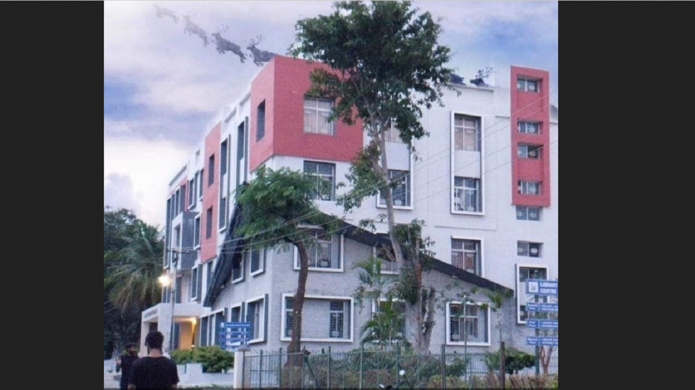

-
The Library is housed in a separate building with a separate Issue.
-
Reference and General Reading Room Sections with a sufficient collection of books and subscribed to the e-Journals through VTU Consortia.
-
Hostel facility for about 600 students is provided in the campus with separate Hostel for Girls.
-
The College has Excellent Sports facilities for students including gymnasium.
-
Transportation facility is available for students coming from Bengaluru, Mandya, Channapatna& Ramanagaram.
|